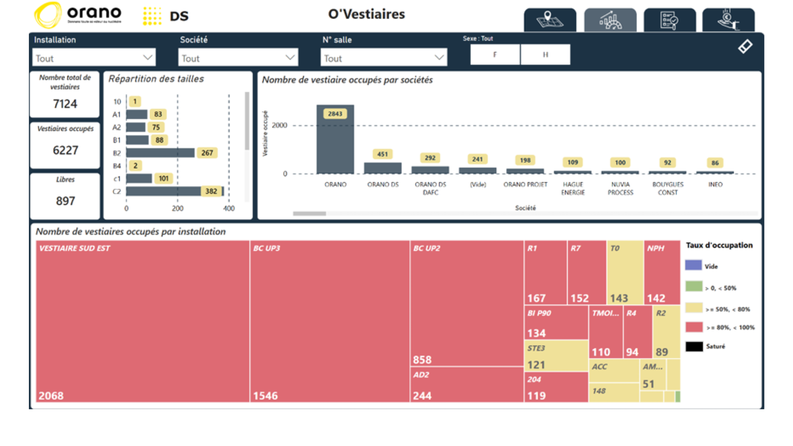

Tableau de bord Power BI – Suivi des vestiaires
Conception d’un tableau de bord Power BI interactif permettant le suivi des vestiaires du site, avec une carte personnalisée développée en DAX et JSON pour la représentation géographique des zones.

Conception d’un tableau de bord Power BI interactif permettant le suivi des vestiaires du site, avec une carte personnalisée développée en DAX et JSON pour la représentation géographique des zones.
Ce projet a été mené dans le cadre de mon stage de Master 2 Statistiques Appliquées et Analyse Décisionnelle chez Orano DS à La Hague. L’objectif était de concevoir un tableau de bord Power BI pour le suivi des vestiaires du site, permettant de visualiser en temps réel les taux d’occupation, d’analyser les anomalies et d’optimiser la gestion des espaces.
Une carte sur mesure a été développée à partir d’un fichier JSON personnalisé, permettant d’afficher les zones et vestiaires de manière fidèle à la configuration du site. Des mesures DAX ont ensuite permis de colorer dynamiquement les zones selon leur taux d’occupation.
